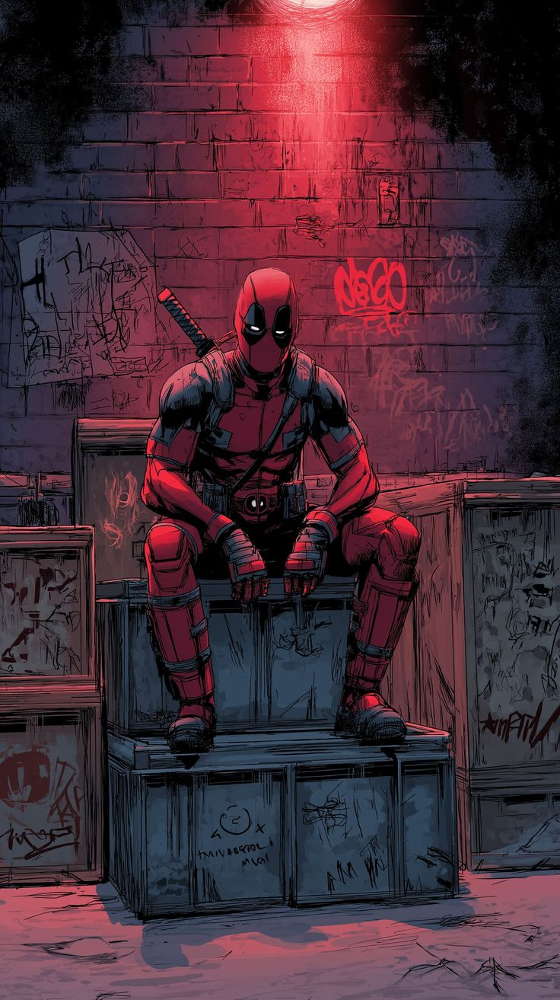

DEADPOOL
 Enter the Merc with a Mouth—Deadpool. A fast talking mercenary with a face like a topographical map of Utah, Wade Wilson is the only hero who knows he’s in a comic book. Thanks to a rogue experiment, he sports a healing factor that lets him grow back limbs and a mouth that never, ever shuts.
He’s a whirlwind of twin katanas and fourth-wall breaks, constantly winking at the audience while turning a battlefield into a comedy club. Whether he’s hunting for chimichangas or "borrowing" a Vespa for a high-speed chase, his brand of anarchy makes him the most unpredictable weapon in the Marvel Universe.
Beneath the red spandex and the sarcasm, he’s a surprisingly heartfelt misfit who just wants to do the right thing—as long as it involves a lot of explosions. He’s the ultimate proof that you don't need a filter to be a legend.
JOKER
Meet the Joker—the Clown Prince of Crime and Batman's greatest nightmare. First appearing in 1940, he is defined by his chalk-white skin, green hair, and a permanent, haunting grin. Unlike other villains, he isn't in it for the money; he is an agent of chaos who simply wants to watch the world burn.
His past is a mystery, a "multiple choice" history that he rewrites to suit his mood. The most famous story suggests he was a failed comedian who fell into a vat of chemicals at Ace Chemicals, a "one bad day" that shattered his mind and turned him into a homicidal mastermind.
Armed with lethal gags like Joker Venom, he has spent decades testing the Dark Knight's morality. From the terrifying realism of Heath Ledger to the tragic descent of Joaquin Phoenix, the Joker remains the most iconic and unpredictable villain in pop culture.